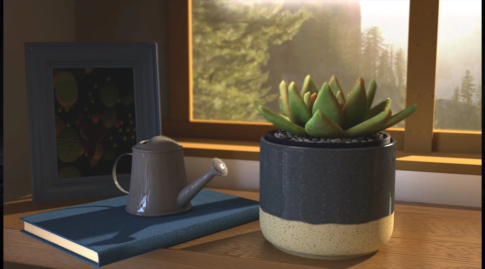
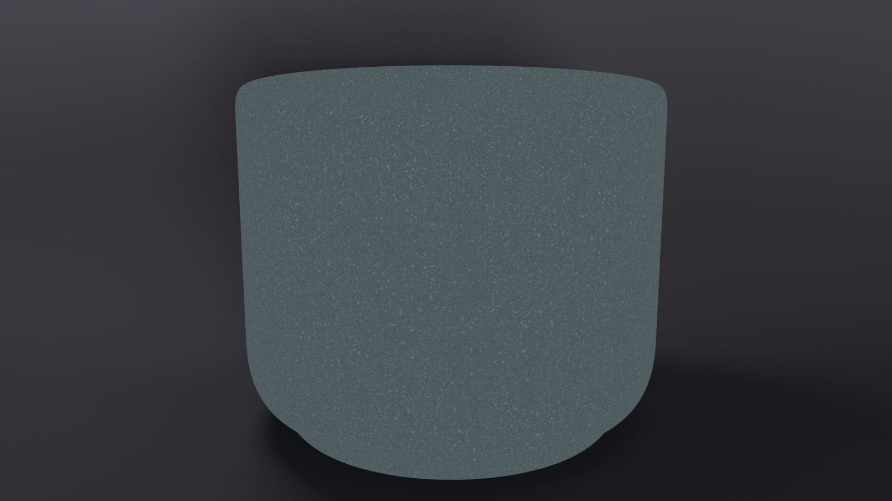
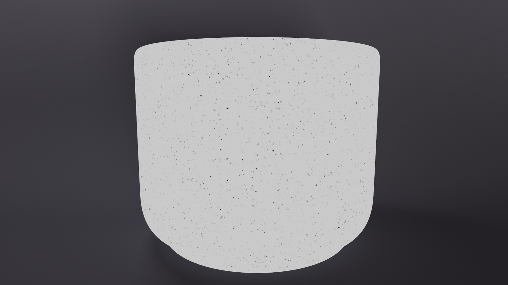
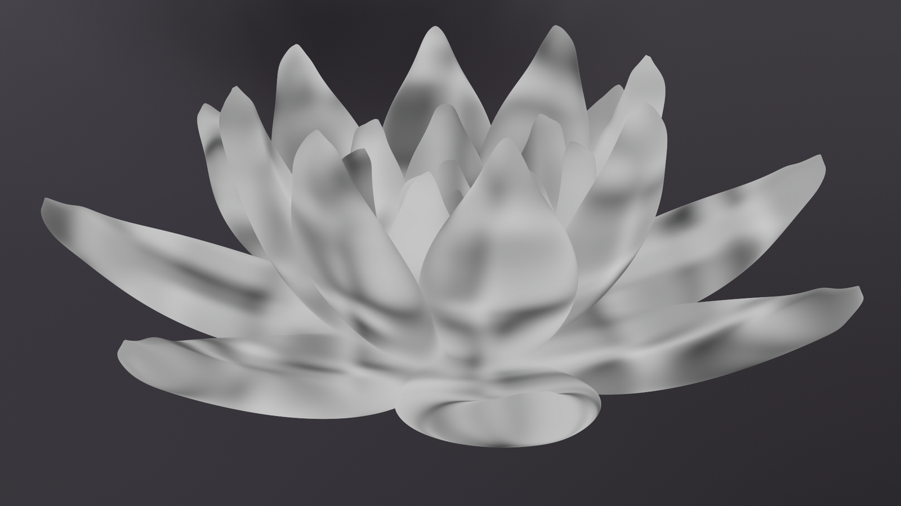
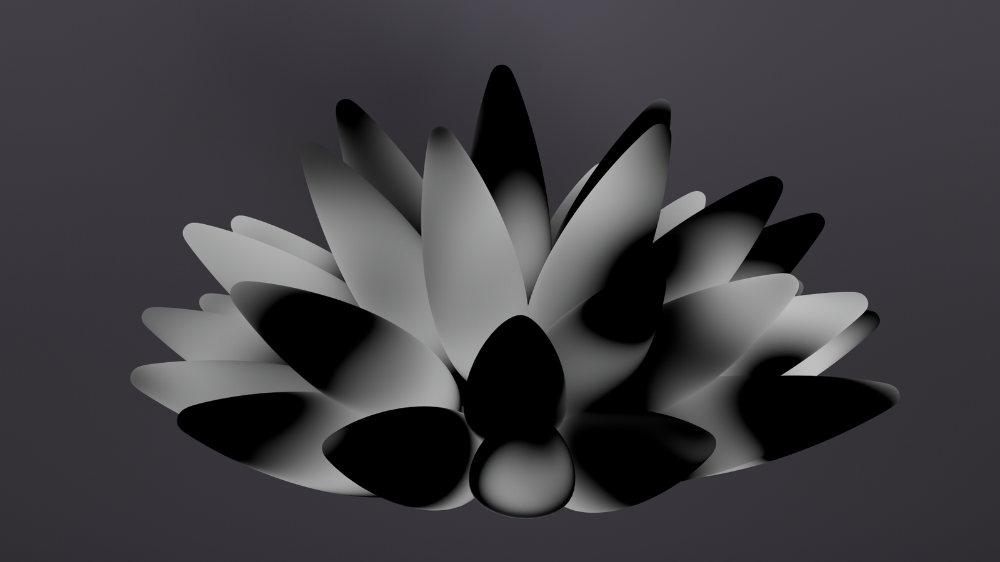

← 建模


材質
程序化材質

這個專案在 Houdini 中完成，包括建模、材質與算圖，並用 Nuke 模糊背景。這裡所有材質都是程序化的，並使用 OSL 完成。
多肉植物
我用 Redshift Ramp 作為花盆的遮罩，讓花盆呈現不同顏色，再加上 Maxon Noise 讓表面出現斑點，並加入 Displacement 讓斑點更有立體感。




首先我用 Maxon Noise 作為表面遮罩，再用 Redshift Ramp 上色。為了讓植物帶有斑點，我用 Maxon Noise 作為 sheen 的遮罩。